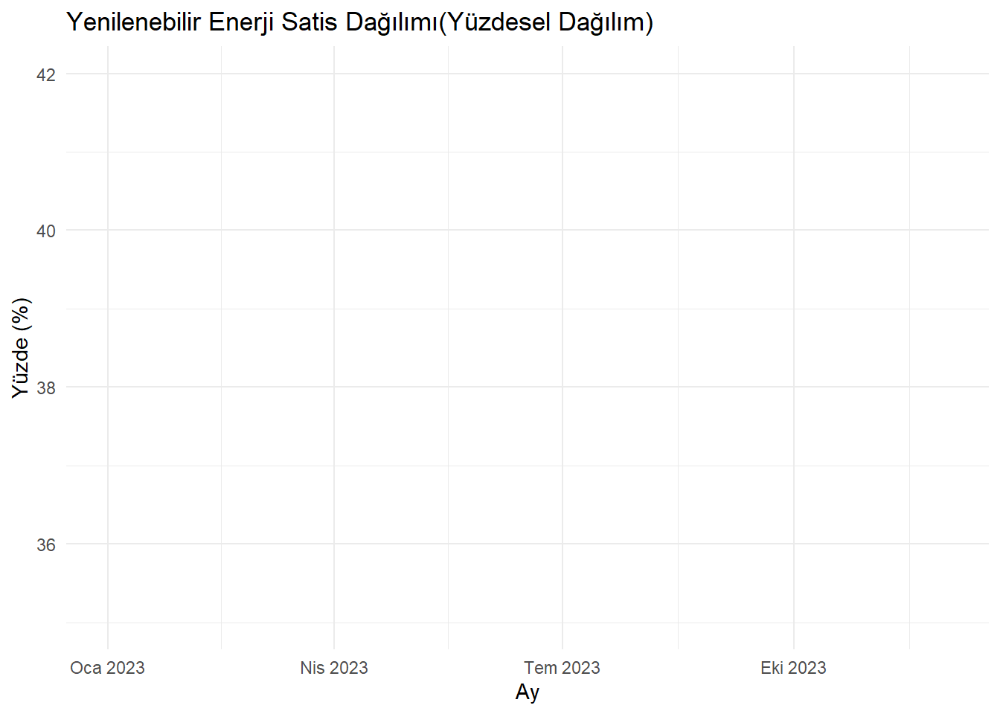

Bu proje kapsamında, yenilenebilir ve karbon bazlı enerji üretim verilerini detaylı bir şekilde analiz etmeyi hedefliyoruz.
Amacımız, veri analizi ve görselleştirme tekniklerini kullanarak, enerji üretimi üzerindeki mevsimsel değişimleri, trendleri ve ilişkileri ortaya çıkarmak ve değerlendirmektir.
1. Veri Toplama ve Hazırlık: İlk olarak, enerji üretimi verilerini titizlikle topladık ve ilgili verilerin işlenebilecek hale gelmesi için çalıştık. Bu aşamada, veri setini temizleme, eksik değerleri doldurma ve format değişikliklerini yaparak veri setini analiz için hazır hale getirmiş olduk.
2. Aylık Toplam Üretim Analizi: Veri setimiz, her ayın toplam yenilenebilir ve karbon bazlı enerji üretimini içeriyor. Bu aşamada, aylık üretim verilerini inceleyerek hangi ayların daha yüksek veya düşük üretim seviyelerine sahip olduğunu belirleyecek ve bu eğilimleri analiz edeceğiz.
3. Mevsimsel Değişim Analizi: Ayları mevsimlere göre gruplayarak, mevsimsel değişimlerin enerji üretimi üzerindeki etkilerini değerlendireceğiz. Bu analiz, mevsimler arasındaki enerji üretimi farklarını ve hangi mevsimlerde yenilenebilir/karbon bazlı enerji kaynaklarının daha fazla kullanıldığını belirleyecektir.
4. Grafiksel Temsiller ve Trend Analizi: Veri setindeki eğilimleri daha iyi görselleştirmek için çeşitli grafikler kullanacağız. Bar grafikleri, çizgi grafikleri ve diğer görsel araçlar kullanarak veri setindeki trendleri görselleştirecek ve bu trendleri analiz edeceğiz.
5. Sonuçların İncelenmesi ve Yorumlanması: Projemizin sonuçlarını dikkatlice inceleyip yorumlayacağız. Enerji üretimi üzerindeki mevsimsel değişimlerin ve trendlerin, iş stratejilerine, enerji politikalarına ve sürdürülebilirlik çabalarına olan olası etkilerini detaylı bir şekilde tartışacağız.
Bu proje kapsamında, enerji sektöründeki veri odaklı bir yaklaşım kullanarak enerji üretimi verilerini analiz etme ve yorumlama konusunda bir çerçeve sunmayı amaçlamaktadır.
2 Veri
2023 Yılı Elektrik Üretiminin Kaynak Bazlı Saatlik Veri Tabanı
Veri setimiz, Türkiye’deki elektrik üretim kaynaklarının saatlik olarak üretimini göstermektedir. Toplam 8760 saatlik veri bulunmaktadır, her bir kayıt bir saatlik zaman dilimini temsil eder. Veri seti, çeşitli enerji kaynaklarına göre üretilen elektrik miktarlarını içermektedir.
Tarih: Gözlem yapılan tarih (gün/ay/yıl), Saat: Gözlem yapılan saat (24 saat formatında) ve Üretilen elektrik miktarı Megawatt (MW) cinsindedir.
2.3 Tercih Sebebi
Bu proje kapsamında, bir grup olarak enerji sektöründe önemli bir sorunu ele almayı amaçladık.
Bu amaç doğrultusunda, enerji üretimi verilerini analiz etmek için bir veri seti seçme kararı aldık. İşte grup olarak bu veri setini seçme nedenlerimiz:
İşbirliği ve Ortak Hedefler: Grup üyeleri olarak birlikte çalışarak enerji sektöründeki belirli bir problemi çözmeyi hedefledik. Enerji üretimi verilerini analiz etmek, ortak hedeflerimize ulaşmamızı sağlayacak güçlü bir başlangıç noktasıydı.
Analitik Yeteneklerimizin Birleştirilmesi: Grup üyeleri arasında çeşitli analitik becerilere sahip bireyler bulunmaktadır. Bu veri setini seçerek, farklı perspektiflerden faydalanarak birlikte güçlü bir analiz yapma potansiyelimizi görmüş olduk.
Ortak İlgi Alanları ve Uzmanlık Alanları: Grup üyeleri, enerji sektörüne ilgi duyan veya bu alanda uzmanlaşmış kişilerdir. Bu veri seti, ortak ilgi alanlarımıza ve uzmanlık alanlarımıza hizmet ediyor ve bizi daha etkili bir şekilde çalışmaya teşvik ediyor.
Birlikte Öğrenme ve Gelişme İhtiyacı: Grup olarak, belirli bir konuda daha fazla bilgi edinmek ve analitik becerilerimizi geliştirmek istiyoruz. Bu veri setini seçerek, birlikte çalışarak yeni bilgiler öğrenme ve becerilerimizi geliştirme fırsatı bulacağımızı düşündük.
Proje Gereksinimleri ve Amaçları: Projemizin gereksinimleri doğrultusunda, enerji üretimi verilerini analiz etmek önemliydi. Bu veri seti, projemizin amaçlarına uygun bir şekilde, analiz yapmak için uygun bir temel sağlıyor.
2.4 Verilerin Ön İşlemelerin Yapılması
Veri analizi sürecinde, verinin doğru ve güvenilir sonuçlar üretmesi için ön işleme adımları oldukça önemlidir. Bu adımlar, veri setinin temizlenmesi, eksik değerlerin doldurulması ve gerekiyorsa verinin dönüştürülmesi gibi işlemleri içerir. İşte veri ön işleme adı altında gerçekleştirdiğimiz detaylı işlemler:
Veri Temizleme:
Veri setindeki gereksiz veya tutarsız verileri belirleyerek kaldırdık.
Anlamsız veya yanlış verileri düzeltmek için veri setini inceledik ve düzenledik.
Veri setindeki gereksiz sütunları (değişkenleri) kaldırdık veya gereksiz gözlemleri (satırları) sildik.
Eksik Veri Analizi ve Doldurma:
Eksik verileri belirleyerek, eksik veri analizi yaptık ve eksik veri sayısını ve dağılımını değerlendirdik.
Eksik verileri uygun bir yöntemle doldurarak veri kaybını minimize ettik. Örneğin, eksik sayısal verileri ortalama veya medyan değerleri ile doldurduk, eksik kategorik verileri mod değerleriyle doldurduk veya eksik verileri tahmin etmek için makine öğrenimi modelleri kullandık.
Gerektiğinde, sayısal değişkenlerin dağılımlarını dönüştürerek normal dağılıma daha yakın hale getirdik. Bu, model performansını iyileştirebilir.
Aykırı Değerleri İncelenmesi ve İşlenmesi:
Aykırı değerleri belirleyerek, bu değerlerin neden kaynaklandığını ve nasıl işlenebileceğini inceledik.
Aykırı değerleri düzeltmek veya kaldırmak için uygun yöntemleri kullandık. Örneğin, aykırı değerleri ortalama veya medyan değerleri ile değiştirdik veya sınırladık.
Bu ön işleme adımları, veri setimizi analiz etmeden önce temizlememizi ve hazırlamamızı sağlar. Doğru ön işleme adımları kullanılarak, veri setimizin kalitesini artırabilir ve sonuçlarımızın güvenilirliğini sağlayabiliriz
3 Analiz
Bu kapsamda 8 farklı grafik ile elimizdeki “2023 Yılı Elektrik Üretiminin Kaynak Bazlı Saatlik Veri Tabanı†veri setini analiz edeceğiz.
3.1 Elektrik Üretiminde Yenilenebilir Enerji ve Karbon Tabanlı Kaynakların Payı: Bir Karşılaştırma
Grafiğimiz, elektrik üretimi çeşitli kaynaklardan sağlanmaktadır. Bu kaynaklar arasında hem karbon bazlı hem de yenilenebilir enerji kaynakları bulunmaktadır. Karbon bazlı kaynaklar olarak doğalgaz, linyit, ithal kömür ve taş kömürü öne çıkmaktadır. Yenilenebilir enerji kaynakları ise barajlı hidroelektrik, rüzgar, güneş, jeotermal ve biyokütle gibi çeşitlilik göstermektedir.
Grafiklerimiz, toplam elektrik üretimi içindeki karbon bazlı ve yenilenebilir enerji kaynaklarının payını göstermektedir. Karbon bazlı kaynakların hala önemli bir paya sahip olduğunu gözlemlemekteyiz; ancak yenilenebilir enerji kaynaklarının da giderek artan bir oranda elektrik üretiminde rol oynadığını belirtmek gerekir. Bu durum, sürdürülebilir enerji kullanımına doğru yapılan geçişin bir göstergesi olarak değerlendirilebilir.
R kodu:
# Gerekli kütüphaneyi yüklemeniz gerekmektedirlibrary(readr)# Veri setimizi okuyoruzlibrary(readr)colnames(data)
NULL
library(readr)data <-read_csv2("data/yakitTuketimcs.csv", locale =locale(encoding ="ISO-8859-9"))# Üretim türlerinin toplamlarını hesaplıyoruzproduction_types <-colSums(data[, 4:ncol(data)])# Karbon bazlı ve yenilenebilir enerji kaynaklarını tanımlıyoruzcarbon_sources <-c("Benzin", "FuelOil", "Motorin", "İthalDizel","LPG","EndustriyelYakıt","Hibrit")renewable_sources <-c( "Elektrik")# Karbon bazlı ve yenilenebilir kaynakların toplam üretimini hesaplıyoruzcarbon_total <-sum(production_types[carbon_sources])renewable_total <-sum(production_types[renewable_sources])# Pasta grafiği için yeni bir vektör oluşturuyoruzenergy_categories <-c(FosilYakit = carbon_total, Yenilenebilir = renewable_total)# Yüzdeleri hesaplıyoruzpercentages <-round(100* energy_categories /sum(energy_categories), 1)# Yüzdelerle etiketleri oluşturuyoruzlabels <-paste(names(energy_categories), ": ", percentages, "%", sep="")# Pasta grafiği çizdiriyoruzpie(energy_categories, labels = labels, main ="Yakıt Tuketimi", col =c("darkgray", "green"))
3.2 Haftaiçi ve Haftasonu Gerçekleşen Tüketim Grafiğinin Aylara Göre Dağılımı
Grafiğimiz, aylık bazda hafta içi ve hafta sonu günlerine ayrılmış elektrik üretim miktarlarını karşılaştırarak sunmaktadır. Turuncu çubuklar, hafta içi günlerde üretilen elektrik miktarını, mavi çubuklar ise hafta sonlarında üretilen miktarı temsil etmektedir. Yıl boyunca, Ocak’tan Aralık’a kadar olan veriler incelendiğinde, hafta içi günlerde üretilen elektrik miktarının hafta sonlarına göre daha yüksek olduğunu gözlemliyoruz.
Özellikle Mart ve Ekim aylarında, hafta içi elektrik üretiminin pik yaptığını belirlemek mümkün. Bu durum, endüstriyel aktivitelerin ve genel enerji talebinin yoğun olduğu dönemlerde daha belirgin hale gelmektedir. Diğer yandan, Mayıs ve Haziran aylarında hafta içi ve hafta sonu arasındaki üretim farkı azalmaktadır. Yaz tatillerinin başlaması ve hava sıcaklıklarının yükselmesi gibi sebeplerle iş yerleri ve okulların aktivitelerinde gözlemlenen düşüş bu duruma katkıda bulunuyor olabilir.
Yıl sonuna doğru, özellikle Aralık ayında, hafta içi ve hafta sonu elektrik üretimi arasındaki fark en düşük seviyeye ulaşmaktadır. Bu, genel tatil sezonunun getirdiği azalmaların, iş günlerinde de elektrik tüketimini etkilediğini göstermektedir.
R kodu:
# Gerekli kütüphanelerlibrary(readr)library(dplyr)library(lubridate)library(ggplot2)library(scales)# Veriyi okuyoruzdata <-read_csv2("data/yakitTuketimcs.csv", locale =locale(encoding ="ISO-8859-9"))# Sütun adını düzeltiyoruznames(data)[1] <-"Tarih"# Tarih sütununu Date formatına çeviriyoruzdata$Tarih <-as.Date(data$Tarih, format ="%d.%m.%Y")# 'Toplam' sütunundaki virgülü noktaya çevirip sayıya dönüştürüyoruzdata$Toplam <-as.numeric(gsub(",", ".", data$Toplam))# NA değerlerini temizliyoruzdata <-na.omit(data)# Hafta içi / hafta sonu bilgisi ekliyoruzdata$GunTipi <-ifelse(wday(data$Tarih, week_start =1) %in%c(6, 7),"HaftaSonu", "Haftaici")# Ay bilgisini ekliyoruzdata$Ay <-month(data$Tarih, label =TRUE)# Aylık ve gün tipine göre gruplayıp toplam üretimi hesaplıyoruzmonthly_data <- data %>%group_by(Ay, GunTipi) %>%summarise(Toplam =sum(Toplam, na.rm =TRUE))# Grafiği çiziyoruzggplot(monthly_data, aes(x = Ay, y = Toplam, fill = GunTipi)) +geom_bar(stat ="identity", position ="dodge") +labs(title ="Aylık Toplam Elektrik Üretimi: Hafta içi - Hafta Sonu",x ="Ay",y ="Toplam Üretim (MWh)" ) +scale_y_continuous(labels = comma) +scale_fill_manual(values =c("darkblue", "orange")) +theme_minimal() +theme(axis.text.x =element_text(angle =45, hjust =1))
Grafiğimiz, her ay için yenilenebilir enerji kaynakları ile fosil yakıt kaynaklarının toplam elektrik üretim miktarlarını karşılaştırıyor. Yenilenebilir enerji kaynakları, çevresel etkileri düşük ve sürdürülebilir bir enerji sağladığı için önemlidir. Bu kaynaklar arasında barajlı, akarsu, rüzgar, güneş ve biyokütle gibi çeşitli kaynaklar yer alıyor. Grafiğimizde bu kaynakların aylık üretim toplamları mavi barlarla gösteriliyor.
Diğer yandan, fosil yakıt kaynakları arasında doğalgaz, linyit, ithal kömür, fuel oil ve taş kömürü bulunuyor. Fosil yakıtlar, karbon emisyonlarına neden olarak çevresel sorunlara katkıda bulunmalarına rağmen, hala dünya genelinde enerji üretiminin önemli bir kısmını oluştururlar. Grafiğimizde fosil yakıt kaynaklarının aylık üretim toplamları turuncu barlarla gösteriliyor.
Grafiğimiz, her iki enerji türünün aylık üretim miktarlarını yan yana göstererek, zaman içindeki üretim değişikliklerini ve eğilimleri izlemeyi kolaylaştırır. Örneğin, belirli aylarda yenilenebilir enerji üretiminin artışı veya azalışı, politikaların, mevsimsel koşulların veya piyasa dinamiklerinin bir sonucu olabildiğini düşünmekteyiz. Bu grafik, enerji üretimindeki değişiklikleri anlamak için önemlidir.
R kodu:
# Gerekli kütüphaneleri yükleyinlibrary(ggplot2)library(dplyr)library(tidyr)library(readr)library(scales) # label_comma için# Veriyi doğru kodlama ile okuyundata <-read_csv2("data/yakitTuketimcs.csv", locale =locale(encoding ="ISO-8859-9"))# Sütun adlarını düzeltiyoruznames(data)[names(data) =="ï..Tarih"] <-"Tarih"# Tarih sütununu gün.ay.yıl formatına çeviriyoruzdata$Tarih <-as.Date(data$Tarih, format ="%d.%m.%Y")# Ay ve mevsim bilgilerini ekleyindata$Ay <-as.numeric(format(data$Tarih, "%m"))data$Mevsim <-ifelse(data$Ay %in%c(12, 1, 2), "Kış",ifelse(data$Ay %in%c(3, 4, 5), "İlkbahar",ifelse(data$Ay %in%c(6, 7, 8), "Yaz", "Sonbahar")))# Mevsim sütununu da dahil ederek veriyi long formata çeviriyoruzlong_data <- data %>%select(Mevsim, Motorin, Benzin, LPG, FuelOil, Elektrik, CNG, Biyoyakit) %>%pivot_longer(cols =-Mevsim, names_to ="UretimTuru", values_to ="Miktar")# Mevsimlere ve üretim türlerine göre gruplayıp toplam üretimi hesaplıyoruzseasonal_data <- long_data %>%group_by(Mevsim, UretimTuru) %>%summarise(ToplamMiktar =sum(Miktar, na.rm =TRUE), .groups ="drop")# Grafik çizdiriyoruzggplot(seasonal_data, aes(x = Mevsim, y = ToplamMiktar, fill = UretimTuru)) +geom_bar(stat ="identity", position =position_dodge()) +scale_y_continuous(labels =label_comma()) +labs(title ="Mevsimlere Göre Enerji Uretim Türleri",x ="Mevsim",y ="Toplam Uretim (MWh)",fill ="Uretim Turu") +theme_minimal() +theme(axis.text.x =element_text(angle =45, hjust =1))
##Yıllık Enerji Üretiminin Kaynaklara Göre Dağılım
Bu grafik, 2024 yılı boyunca enerji üretiminin farklı kaynaklardan sağlanan oranlarını göstermektedir. Her dilim, bir enerji kaynağının toplam üretimdeki yüzdesel payını ifade etmektedir. Aşağıda her enerji kaynağının yorumunu bulabilirsiniz:
🔸 Motorin (Grafikteki en büyük dilim – oranlara bağlı) Motorin, genellikle dizel jeneratörlerde kullanılan fosil bir yakıttır. Enerji üretiminde bu kadar yüksek paya sahip olması, motorinle çalışan santrallerin ya da sistemlerin özellikle küçük ve orta ölçekli üretim tesislerinde yaygın olduğunu gösterir. Yüksek maliyetli olmasına rağmen, ulaşılması kolay ve hızlı devreye alınabilir olduğu için tercih edilir.
🔸 Benzin Benzin, enerji üretiminde nadiren kullanılır. Ancak acil durum jeneratörleri veya küçük ölçekli mobil üretim sistemlerinde yer alabilir. Grafikteki payı görece düşükse, bu onun sadece yedek sistemlerde kullanıldığını destekler niteliktedir.
🔸 LPG (Sıvılaştırılmış Petrol Gazı) LPG, özellikle küçük işletmelerde ve bazı konut tipi sistemlerde enerji üretimi için kullanılabilir. Emisyonu düşük olması ve kolay taşınabilirliği nedeniyle yerel kullanımlarda tercih edilir. Orta düzeyde bir paya sahip olması, bölgesel bazda kullanımını işaret eder.
🔸 Elektrik (Burada üretim kaynağı değil, nihai enerji olarak yorumlanmış olabilir) Veri kümenizde “Elektrik†sütunu, diğer yakıt türleri kullanılarak üretilen elektrik enerjisini ifade ediyor olabilir. Bu nedenle, toplam üretimin en büyük kısmını oluşturması doğaldır. Elektrik, hem fosil hem yenilenebilir kaynaklardan üretilebilir, dolayısıyla tüm sistemin çıktısını simgeler.
🔸 Biyoyakıt Organik atıklar, bitkisel yağlar veya tarım artıkları gibi kaynaklardan elde edilen biyoyakıt, sürdürülebilir enerji üretiminde önemli bir yere sahiptir. Grafikteki payı, Türkiye’deki veya veri setinizin temsil ettiği sistemlerde biyoyakıt kullanımının henüz sınırlı olduğunu göstermektedir. Ancak bu oran önümüzdeki yıllarda artış eğilimindedir.
📌 Genel Değerlendirme: Enerji üretimi halen büyük ölçüde fosil yakıtlar (motorin, benzin, LPG) üzerinden sağlanmaktadır.
Yenilenebilir enerji kullanımı (biyoyakıt) henüz düşük seviyededir, ancak çevreci yaklaşımlar ve politikalarla önemi artmaktadır.
Elektrik sütunu nihai üretimi temsil ettiği için mutlak değer anlamında en yüksek olabilir, ancak analizde kaynak bazlı dağılım dikkate alınmalıdır.
NOT: İlgili firma çevreci yaklaşımları desteklese bile firmdan halen fosil yakıt satın alınma oranı’da çok yüksek.
library(tidyverse)# Enerji kaynaklarına göre toplamları hesaplaenergy_totals <-colSums(data[, c("Motorin", "Benzin", "LPG", "Elektrik", "Biyoyakit")])# Toplam üretimtotal_production <-sum(energy_totals)# Yüzdelik hesaplamaları yapenergy_percentages <- energy_totals / total_production *100# Enerji kaynaklarını ve yüzdelerini bir dataframe'e çevirenergy_df <-data.frame(Enerji_Kaynagi =names(energy_percentages), Yuzde = energy_percentages)# Pie chart çizpie(energy_df$Yuzde, labels =paste(energy_df$Enerji_Kaynagi, sprintf("(%.1f%%)", energy_df$Yuzde)), main ="Yıllık Enerji Satis Dagilimi",col =rainbow(length(energy_df$Yuzde)))# Efsane eklemelegend("topright", legend = energy_df$Enerji_Kaynagi, fill =rainbow(length(energy_df$Yuzde)))
Ocak Ayı: Yılın başında motorin ve benzin kullanımı yüksek seviyelerde görülüyor. Bu, soğuk havalarda özellikle ısıtma sistemleri, ulaşım ve endüstriyel taleplerin motorin ve benzin tüketimini artırdığını gösteriyor. Yenilenebilir kaynaklar ise mevsim koşullarından dolayı düşük düzeyde kalmış olabilir.
Nisan Ayı: İlkbahar aylarında motorin ve benzin kullanımı azalmaya başlamış. Baharın gelişiyle birlikte ısıtma ihtiyacı azalırken, yenilenebilir enerji üretimi (örneğin güneş) artış eğiliminde. Aynı şekilde biyoyakıt kullanımı sabit bir çizgide devam etmiş.
Temmuz Ayı: Yaz aylarında enerji ihtiyacı özellikle klima kullanımıyla birlikte artmış olabilir. Bu nedenle motorin ve benzin kullanımı tekrar artış göstermiştir. Güneşli hava koşulları, yenilenebilir enerji üretiminde de belirgin bir yükselişe neden olmuştur. Biyoyakıt, diğer kaynaklara göre daha düşük ama sabit bir katkı sunmaktadır.
Ekim Ayı: Sonbaharın gelişiyle birlikte motorin ve benzin tüketimi yeniden artışa geçmiş, bu da ısıtma ve ulaşım ihtiyaçlarının devreye girmesinden kaynaklanıyor olabilir. Yenilenebilir kaynakların üretimi, yaz aylarına göre azalmaya başlamış. Biyoyakıt kullanımı ise stabil şekilde sürmektedir.
R kodu:
library(tidyverse)library(lubridate)# Aylık toplamları hesapla ve hidrokarbon kaynaklarına göre ayırmonthly_hydrocarbons <- data %>%mutate(Ay =floor_date(Tarih, "month")) %>%group_by(Ay) %>%summarise(Motorin =sum(Motorin),Biyoyakit =sum(Biyoyakit),Benzin =sum(Benzin),Yenilenebilir =sum(Yenilenebilir),.groups ='drop' )# Erişilebilir format için veriyi long formata çevirmonthly_long <-pivot_longer(monthly_hydrocarbons, cols =c(Motorin, Biyoyakit, Benzin, Yenilenebilir),names_to ="Enerji_Kaynagi", values_to ="Uretim")# Grafik çizggplot(monthly_long, aes(x = Ay, y = Uretim, fill = Enerji_Kaynagi)) +geom_bar(stat ="identity", position =position_dodge()) +scale_fill_brewer(palette ="Set1") +labs(title ="Aylık Hidrokarbon Enerji Satış(Talep) Dağılımı",x ="Ay",y ="Toplam Uretim (MWh)",fill ="Enerji Kaynağı") +theme_minimal()
5 Fosil ve Yenilenebilir Enerjinin Talep Dağılımı
Bu grafik, 2024 yılı boyunca fosil yakıtlar ve yenilenebilir enerji kaynaklarının toplam enerji üretimi (veya talep) içindeki oranlarını göstermektedir. Pasta grafiğinde her dilim, belirli bir enerji kategorisinin toplam tüketim içerisindeki yüzdesini temsil etmektedir.
📌 Ana Bulgular: Fosil Yakıtlar: Motorin, benzin gibi fosil kaynaklar toplam talebin büyük bir bölümünü oluşturmaktadır. Bu durum, halen geleneksel enerji kaynaklarına yüksek düzeyde bağımlı olunduğunu göstermektedir.
Yenilenebilir Enerji: Biyoyakıt ve yenilenebilir üretim kalemlerinin oluşturduğu bu kategori, sürdürülebilir enerjiye geçiş çabalarının bir göstergesidir. Oranı, enerji dönüşüm sürecinin ne kadar ilerlediğini değerlendirmek açısından önemlidir.
💬 Genel Değerlendirme: Veriler, enerji üretim ve tüketim dengesinde fosil yakıtların hâlâ baskın olduğunu ortaya koymaktadır. Ancak yenilenebilir kaynakların grafik üzerindeki payı, enerji politikalarının ve teknolojik yatırımların bu yönde ilerlediğini göstermektedir.
Enerji arz güvenliği, çevresel etkiler ve ekonomik sürdürülebilirlik açısından yenilenebilir kaynakların payının artırılması gerekliliği açıktır. Bu dağılım, enerji dönüşüm sürecinin mevcut durumunu gözler önüne sererek karar vericiler ve politika yapıcılar için önemli bir referans sağlamaktadır.
library(tidyverse)# Sütun adlarını düzelt (garantili olması için)names(data) <-make.names(names(data))# Fosil ve yenilenebilir toplamlarını hesaplafosil_toplam <-rowSums(data[, c("Motorin", "Benzin")], na.rm =TRUE)yenilenebilir_toplam <-rowSums(data[, c("Biyoyakit", "Yenilenebilir")], na.rm =TRUE)# Yıllık toplam üretimi hesaplatoplam_fosil <-sum(fosil_toplam)toplam_yenilenebilir <-sum(yenilenebilir_toplam)# Veri çerçevesi oluşturkarsilastirma_df <-data.frame(Kaynak =c("FosiYakittlar", "YenilenebilirEnerji"),Uretim =c(toplam_fosil, toplam_yenilenebilir))ggplot(karsilastirma_df, aes("", Uretim, fill = Kaynak)) +geom_bar(stat ="identity", width =1) +coord_polar("y") +theme_void()
5.1 Toplam Üretimin Fosil Yakıt Üretimi İle Karşılaştırılması
Bu analizde, 2024 yılı boyunca Türkiye’de (veya çalışılan sistemde) üretilen toplam enerjinin ne kadarlık kısmının fosil yakıtlardan sağlandığı incelenmiştir. Kullanılan grafiklerde:
Mavi renkli sütunlar, her ayki toplam enerji üretimini,
Sarı renkli sütunlar, bu toplamın içinde fosil yakıtlarla (motorin, LPG, fuel oil, biyoyakıt) elde edilen kısmı göstermektedir.
İkinci grafikte ise kırmızı çizgi ile fosil enerjinin yüzdesel oranı izlenmektedir.
📆 Aylık Değerlendirme: Ocak (2024-01): Soğuk hava nedeniyle enerji ihtiyacı artmıştır. Fosil enerji oranı yüksek; sarı sütun, maviye oldukça yakındır.
Şubat: Enerji üretimi bir miktar düşse de fosil kaynakların oranı hâlâ yüksektir. Isınma ihtiyacı devam etmektedir.
Mart - Nisan: Havaların ısınmasıyla birlikte enerji talebi dengelenmiştir. Fosil enerji oranı düşmüştür; sarı sütun maviye göre daha kısa.
Mayıs - Haziran: Enerji üretimi artmaya başlar. Ancak bu artışın çoğu yenilenebilir kaynaklardan geldiği için fosil oranı görece düşüktür.
Temmuz - Ağustos: Yaz aylarında enerji talebi zirve yapar (klima ve soğutma etkisi). Hem mavi hem sarı sütunlar yüksektir. Fosil kaynak kullanımı yeniden artar.
Eylül: Enerji üretimi düşmeye başlar. Fosil oranı da nispeten azalır.
Ekim - Kasım: Enerji üretimi sabit kalırken fosil kaynaklara dönüş başlar, oran tekrar yükselişe geçer.
Aralık: Kışın gelişiyle birlikte fosil enerji oranı en yüksek seviyelere yaklaşır. Sarı sütun, maviye oldukça yakın ve kırmızı çizgi grafikte yükseliştedir.
📌 Genel Yorum: Grafiklerde görüldüğü üzere, fosil enerji kullanımı mevsimsel olarak dalgalanmaktadır:
Kışın ısınma,
Yazın ise soğutma ihtiyacı fosil enerjiye olan talebi artırmaktadır.
Bu da, fosil kaynakların hâlâ enerji üretiminde önemli rol oynadığını gösterir. Yenilenebilir kaynaklara geçiş sürecinin hızlanması, bu dalgalanmanın etkilerini azaltabilir.
R kodu:
library(tidyverse)library(lubridate)# Veriyi yükledata <-read_csv2("data/yakitTuketimcs.csv", locale =locale(encoding ="ISO-8859-9"))# Tarih formatını düzeltdata$Tarih <-dmy(data$Tarih) +years(1)# Aylık toplamları hesaplamonthly_data <- data %>%mutate(Ay =floor_date(Tarih, "month")) %>%group_by(Ay) %>%summarise(Toplam =sum(Toplam),Hidrokarbon =sum(Motorin + LPG + FuelOil + Biyoyakit ),.groups ='drop' )# Yüzdesel dağılımı hesaplamonthly_data$HidrokarbonYuzde = (monthly_data$Hidrokarbon / monthly_data$Toplam) *100# Grafik çizggplot(monthly_data, aes(x = Ay)) +geom_col(aes(y = Toplam), fill ="blue", alpha =0.7) +geom_col(aes(y = Hidrokarbon), fill ="yellow", alpha =0.7) +labs(title ="Aylık Toplam ve Fosil Enerji Üretimi", x ="Ay", y ="Enerji Üretimi (MWh)") +theme_minimal()
# Yüzdelik dağılım grafiğiggplot(monthly_data, aes(x = Ay, y = HidrokarbonYuzde, group =1)) +geom_line(color ="darkred", size =1) +geom_point(color ="darkred", size =2) +labs(title ="Fosil Enerji Üretiminin Yüzdesel Dağılımı", x ="Ay", y ="Yüzde (%)") +theme_minimal() +coord_cartesian(ylim =c(33, 55)) # y eksenini sınırlandırıyoruz
5.2 Toplam Üretimin Yenilenebilir Enerji Üretimi İle Karşılaştırılması
Bu grafikte, 2024 yılı boyunca her ay üretilen toplam enerji ile yenilenebilir enerji miktarları karşılaştırmalı olarak gösterilmiştir. Mavi renk, toplam enerji üretimini; Yeşil renk, aynı ayda yenilenebilir kaynaklardan üretilen enerji miktarını temsil etmektedir.
✅ Ocak 2024 Toplam enerji üretimi yüksek.
Yenilenebilir enerji üretimi de oldukça güçlü; yaklaşık %40-45 bandında.
Kış ayı olmasına rağmen yenilenebilir kaynakların ciddi katkı sağladığı görülüyor. Bu, barajlı hidroelektrik ve biyoyakıt üretiminin etkili olduğunu düşündürüyor.
✅ Şubat - Mart 2024 Toplam üretim bir miktar azalsa da, yenilenebilir enerji oranı korunmuş.
Rüzgar enerjisi veya biyokütle gibi mevsimden bağımsız çalışan sistemler burada etkili olmuş olabilir.
✅ Nisan - Mayıs 2024 Bahar aylarında toplam enerji üretimi dengeli seyrederken, yeşil alanın genişliği dikkat çekiyor.
Bu dönem, barajlı enerji üretiminin yüksek olduğu zamanlar olabilir. Suyun bol olduğu dönemlerde hidroelektrik üretimi artar.
✅ Haziran - Temmuz 2024 Yaz aylarında toplam enerji üretimi zirve yapıyor. Bu, artan elektrik talebini (klima kullanımı gibi) yansıtır.
Yenilenebilir enerji üretimi de artmış durumda, ancak toplam üretimin biraz altında kalıyor. Bu artış, güneş enerjisinden kaynaklanıyor olabilir.
✅ Ağustos 2024 Hem toplam hem de yenilenebilir enerji üretimi yüksek.
Yazın sonuna doğru hâlâ güneşten güçlü üretim elde ediliyor olabilir.
✅ Eylül - Ekim 2024 Sonbaharda toplam üretim düşmeye başlasa da yenilenebilir üretimin oranı sabit kalıyor.
Bu, mevsim geçişlerinde bile yenilenebilir kaynakların üretimdeki istikrarını gösteriyor.
✅ Kasım - Aralık 2024 Kışın yaklaşmasıyla toplam üretim yeniden yükselişte.
Yenilenebilir üretim ise hafif düşse de hâlâ önemli oranda katkı sağlıyor.
Kış barajlarının, jeotermal ve biyokütlenin rolü artmış olabilir.
📌 Genel Değerlendirme Toplam Enerji Üretimi: 2024 yılı boyunca mevsimsel talebe göre dalgalanmıştır. Yaz ve kış aylarında zirve yapmıştır.
Yenilenebilir Enerji Üretimi: Yıl boyunca sabit ve güçlü bir katkı sağlamıştır. Her ay toplam üretimin en az üçte birini, bazı aylarda ise neredeyse yarısını karşılamıştır.
Bu veriler, Türkiye’nin enerji üretiminde yenilenebilir kaynakların ne kadar stratejik bir öneme sahip olduğunu ortaya koymaktadır. Gelecekte bu kaynakların payının daha da artırılması, hem çevre hem de enerji bağımsızlığı açısından büyük fayda sağlayacaktır.
R kodu:
library(tidyverse)library(lubridate)# Veriyi okudata <-read_csv2("data/yakitTuketimcs.csv", locale =locale(encoding ="ISO-8859-9"))# Tarih ve saat sütunlarını birleştirdata$DateTime <-dmy_hms(paste(data$Tarih, data$Saat))# Kullanılmayan sütunları çıkardata <- data %>%select(-Tarih, -Saat)# Aylık bazda gruplama ve toplamamonthly_data <- data %>%mutate(Ay =floor_date(DateTime, "month")) %>%group_by(Ay) %>%summarise(Toplam =sum(Toplam, na.rm =TRUE),Yenilenebilir =sum(Yenilenebilir + Biyoyakit +Elektrik , na.rm =TRUE),.groups ="drop" )# Yüzde hesapla (geçersiz değerleri otomatik engelle)monthly_data <- monthly_data %>%mutate(YenilenebilirYuzde =ifelse(Toplam >0, (Yenilenebilir / Toplam) *100, NA)) %>%filter(!is.na(YenilenebilirYuzde), is.finite(YenilenebilirYuzde))# Grafik 1: Toplam vs Yenilenebilir enerji üretimiggplot(monthly_data, aes(x = Ay)) +geom_col(aes(y = Toplam), fill ="blue", alpha =0.6) +geom_col(aes(y = Yenilenebilir), fill ="green", alpha =0.7) +labs(title ="Aylık Toplam ve Yenilenebilir Enerji Üretimi",x ="Ay", y ="Enerji Üretimi (MWh)") +theme_minimal()
# Grafik 2: Yenilenebilir enerjinin yüzdesel oranıggplot(monthly_data, aes(x = Ay, y = YenilenebilirYuzde, group =1)) +geom_line(color ="red", size =1) +geom_point(color ="red", size =2) +labs(title ="Yenilenebilir Enerji Satis Dağılımı(Yüzdesel Dağılım)",x ="Ay", y ="Yüzde (%)") +theme_minimal() +coord_cartesian(ylim =c(35, 42)) # isteğe göre aralık değiştirilebilir

5.3 2024 Yılı Çevre Dostu Enerjinin Talep İncelemesi
Bu grafik, 2024 yılı boyunca üretilen çevre dostu (yenilenebilir) enerji kaynaklarının aylık değişimini ve dağılımını göstermektedir. Üç ana yenilenebilir kaynak incelenmiştir:
Elektrik (yenilenebilir kaynaklardan elde edilen),
Biyoyakıt,
Yenilenebilir başlığı altında toplanan diğer enerji türleri (örneğin: rüzgar, güneş, hidroelektrik vb.).
Her bir ayda bu kaynaklardan ne kadar üretim yapıldığı, renkli sütunlarla karşılaştırmalı olarak sunulmuştur.
Öne Çıkan Gözlemler: İlkbahar ve Yaz Aylarında Artış: Özellikle Nisan–Ağustos ayları arasında tüm yenilenebilir kaynaklarda üretim artışı dikkat çekmektedir. Bu, barajlardaki su seviyelerinin yükselmesi (hidroelektrik), güneş ışığı süresinin artması ve rüzgar verimliliğinin yükselmesiyle açıklanabilir.
Biyoyakıt Üretimi Sabit ve Güçlü: Biyoyakıt kaynaklı enerji üretimi yılın her ayında istikrarlı bir düzeyde seyretmiştir. Bu durum, biyoyakıt altyapısının kararlı çalıştığını ve mevsimsel dalgalanmalardan çok fazla etkilenmediğini göstermektedir.
Elektrik Üretiminde Dalgalanma: Yenilenebilir elektrik üretimi (özellikle güneş ve rüzgar gibi kaynaklardan) mevsimsel farklılıklar göstermiştir. Yaz aylarında zirveye ulaşan üretim, kış aylarında düşüş göstermektedir.
✅enel Değerlendirme: Yenilenebilir enerji kaynakları, 2024 yılı boyunca Türkiye’nin enerji üretiminde düzenli bir rol oynamış, özellikle yaz aylarında yüksek katkı sağlamıştır.
Mevsimsel etkiler, elektrik üretiminde gözle görülür dalgalanmalara yol açarken, biyoyakıt gibi sürekli üretim sağlayan kaynaklar daha dengeli bir grafik sunmuştur.
Bu analiz, çevre dostu enerji politikalarının güçlendirilmesi ve mevsimsel üretim farklarının daha iyi planlanması açısından önem taşımaktadır.
R kodu:
library(tidyverse)library(lubridate)# Aylık toplamları hesapla ve yenilenebilir enerji kaynaklarına göre ayırmonthly_renewables <- data %>%mutate(Ay =floor_date(DateTime, "month")) %>%group_by(Ay) %>%summarise(Biyoyakit =sum(Biyoyakit),Elektrik =sum(Elektrik),Yenilenebilir =sum(Yenilenebilir),Biyoyakit =sum(Biyoyakit),.groups ='drop' )# Erişilebilir format için veriyi long formata çevirmonthly_long <-pivot_longer(monthly_renewables, cols =c( Biyoyakit, Elektrik, Yenilenebilir, Biyoyakit),names_to ="Enerji_Kaynagi", values_to ="Uretim")# Grafik çizggplot(monthly_long, aes(x = Ay, y = Uretim, fill = Enerji_Kaynagi)) +geom_bar(stat ="identity", position =position_dodge()) +scale_fill_brewer(palette ="Set3") +labs(title ="Aylık Yenilenebilir Enerji Kaynaklarının Dağılımı",x ="Ay",y ="Toplam Üretim (MWh)",fill ="Enerji Kaynağı") +theme_minimal() +coord_cartesian(ylim =c(0, 1600000)) # y eksenini sınırlandırıyoruz
6 2024 Yılı TotalEnergies Yenilenebilir Enerji Talebi Üzerine Genel Değerlendirme
Giriş: Enerji Üretiminin Dönüşümü Dünya genelinde olduğu gibi Türkiye’de de yenilenebilir enerji kaynaklarının teşviki, karbon salınımını azaltma ve iklim değişikliğiyle mücadele açısından büyük önem taşımaktadır. Güneş, rüzgar, biyoyakıt ve hidroelektrik gibi kaynakların kullanımı, fosil yakıt bağımlılığını azaltmanın anahtarıdır.
Ancak 2024 yılına ait veriler, Türkiye’de çevre dostu enerjiye geçişin hâlâ sınırlı kaldığını, fosil yakıtların ise enerji üretiminde baskın konumunu sürdürdüğünü göstermektedir.
Yenilenebilir Enerji Üretiminin Durumu Yıl boyunca yenilenebilir kaynaklardan üretilen enerji miktarı, toplam üretimin yalnızca belirli oranlarını karşılayabilmiştir. Özellikle:
Biyoyakıt üretimi her ay nispeten sabit kalmış, ancak toplam talebi karşılamada düşük payda kalmıştır.
Yenilenebilir elektrik üretimi (muhtemelen güneş, rüzgar, hidroelektrik) mevsimsel dalgalanmalardan ciddi şekilde etkilenmiştir. Yaz aylarında üretim artarken, kış aylarında düşmüştür.
Toplam üretim içindeki oranı, birçok ayda %35–40 bandını aşamamıştır. Bu oran, çevreci enerji kaynaklarının potansiyelinden tam olarak faydalanılamadığını göstermektedir.
️ Fosil Yakıtların Ağırlığı Veriler aynı zamanda fosil yakıtların (motorin, LPG, fuel oil) enerji üretimindeki baskın rolünü net biçimde ortaya koymuştur:
Ocak, Temmuz ve Aralık gibi talebin yoğun olduğu aylarda fosil yakıt kullanımı belirgin şekilde artmıştır.
Yaz aylarında artan klima ihtiyacı ve kış aylarında ısınma gereksinimi, fosil kaynakların hâlâ “vazgeçilmez†olarak görülmesine neden olmuştur.
Özellikle Motorin ve Fuel Oil gibi yüksek emisyonlu kaynaklar, toplam enerji üretiminde önemli pay sahibidir. Bu durum, Türkiye’nin karbon ayak izini artıran başlıca faktörlerden biridir.
📉 Neden Yenilenebilir Enerji Talebi Düşük Kalıyor? Yenilenebilir enerjiye olan talebin düşük kalmasının ardında birkaç temel neden olabilir:
Altyapı Yetersizlikleri: Güneş ve rüzgar enerjisi sistemlerinin yaygınlaştırılması için gerekli teknolojik altyapı hâlâ sınırlı bölgelerde yoğunlaşmaktadır.
Mevsimsel Dengesizlik: Güneş ve rüzgar gibi kaynaklar doğaya bağlı olduğu için, üretim istikrarı açısından dezavantajlı olabilir. Bu durum enerji yönetimini zorlaştırır.
Ekonomik Tercihler ve Maliyetler: Fosil yakıtlar hâlâ birçok durumda daha ucuz, daha erişilebilir ve enerji santrallerinde daha hızlı devreye alınabilir kaynaklardır. Bu da yenilenebilir enerjiye yatırımı sınırlandıran bir etkendir.
Enerji Politikalarının Dönüşüm Hızı: Türkiye’nin enerji stratejilerinde yenilenebilir kaynaklar desteklenmektedir; ancak uygulamadaki yavaşlık, fosil yakıtların kullanımını kısa vadede azaltamamaktadır.
Geleceğe Dair Öneriler Türkiye’nin enerji üretiminde çevre dostu dönüşümü hızlandırması için bazı adımların atılması kritik önem taşımaktadır:
Yenilenebilir enerji teşviklerinin artırılması,
Depolama teknolojilerinin (batarya, hidrojen gibi) geliştirilmesi,
Güneş ve rüzgar santrallerinin yaygınlaştırılması,
Enerji verimliliği politikalarının güçlendirilmesi,
Ve fosil yakıtlara olan yapısal bağımlılığın azaltılması.
Bu adımlar atılmadığı sürece, fosil yakıtların enerji üretimindeki ağırlığı devam edecek ve Türkiye’nin karbon emisyonları yüksek kalmaya devam edecektir.
📌 Sonuç 2024 yılı datasetine göre ,çevreci enerji üretiminde gelişme kaydettiğini ancak hâlâ fosil yakıtların egemen olduğunu göstermektedir. Mevsimsel koşullara bağlı üretim dalgalanmaları, altyapı yetersizlikleri ve kısa vadeli ekonomik tercihler, yenilenebilir kaynakların yeterince değerlendirilememesine yol açmaktadır.
Enerji üretiminde sürdürülebilirlik ve çevresel sorumluluk, ancak yenilenebilir kaynaklara olan talebin artması ve buna yönelik güçlü politikaların uygulanmasıyla mümkün olacaktır.